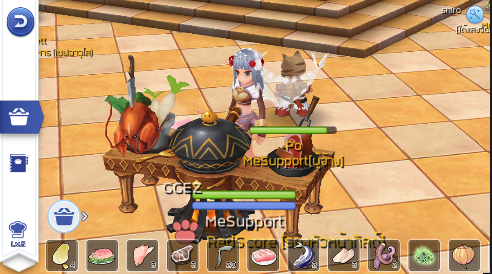

<-- RedScore -->

การทำอาหารเป็นอีกหนึ่งกิจกรรมสนุกๆ ที่มีให้ทำใน Ragnarok M: Eternal Love ซึ่งนอกจากอาหารที่ทำจะช่วยเพิ่มสถานะต่างๆ แบบชั่วคราวแล้ว การทำอาหารและทดลองชิมอาหารให้ครบยังช่วยเพิ่ม EXP นักผจญภัยอีกด้วย
การที่เราจะทำอาหารได้เราจำเป็นต้องทำเควสต์เพื่อปลดล็อคความสามารถในการทำอาหารเสียก่อน ขั้นตอนการทำเควสต์รวมถึงตำแหน่ง NPC สามารถอ่านได้จากไกด์นี้เลย